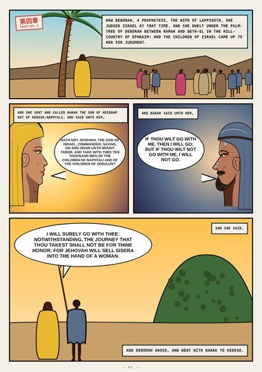
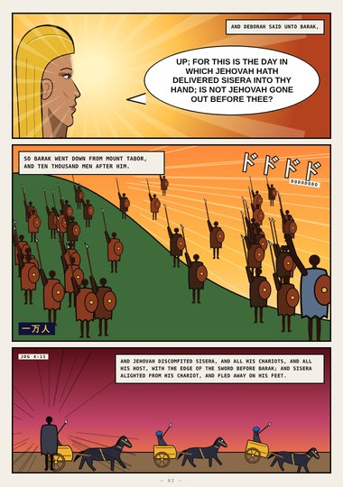
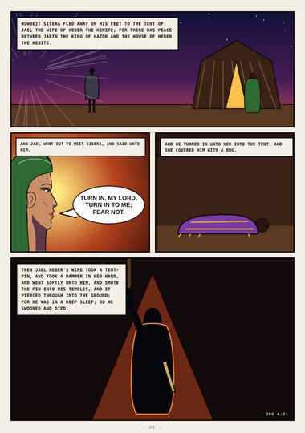
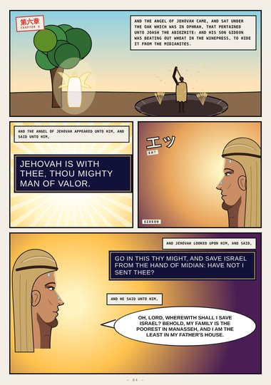
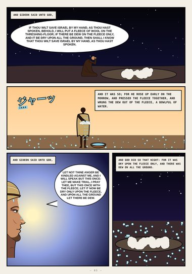
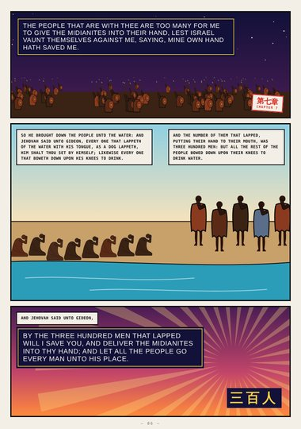
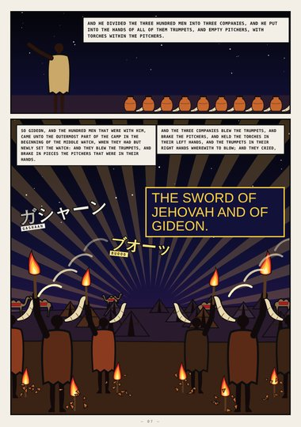
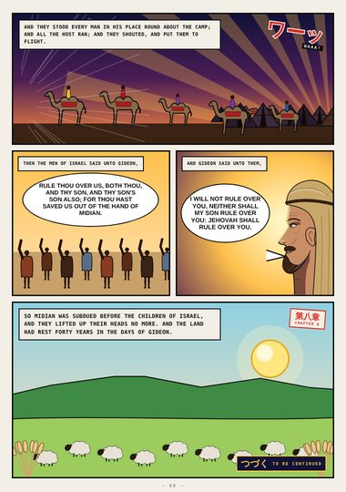

Judges (digest) · Book One · Judges 4–8
The Sword of Gideon
Deborah and Barak, Sisera's chariots routed, the tent of Jael, Gideon in the winepress, the fleece, the three hundred, and the sword of Jehovah and of Gideon.
Digest edition: an early, abridged first draft (highlights only). The full edition is replacing it.
Start reading ›Pages
 CoverCoverJudges 4–8
CoverCoverJudges 4–8
Page 1The Palm-tree of DeborahJudges 4:4–9
Page 2This Is the DayJudges 4:14–15
Page 3The Tent of JaelJudges 4:17–21
Page 4Thou Mighty Man of ValorJudges 6:11–15
Page 5The FleeceJudges 6:36–40
Page 6Three Hundred MenJudges 7:2–7
Page 7The Sword of Jehovah and of GideonJudges 7:16–20
Page 8Jehovah Shall RuleJudges 7:21–8:28